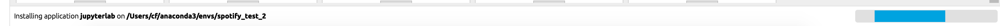
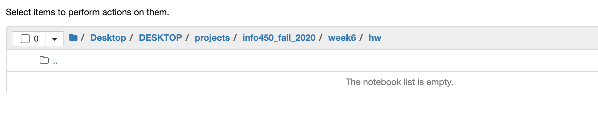
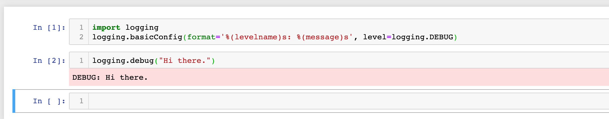

# INFO 450 Fall 2020 <div style="text-align:center;font-size: 1.5;line-height:1.8em;">Week 6</div> --- # Agenda * None * json - remix * function deep dive * Really deep dive * Errors and Exceptions * hackerrank --- # None The sole value of the type NoneType. None is frequently used to represent the absence of a value, as when default arguments are not passed to a function. Assignments to None are illegal and raise a SyntaxError. https://docs.python.org/3/library/constants.html ```python $ python3 Python 3.8.5 (default, Jul 21 2020, 10:48:26) [Clang 11.0.3 (clang-1103.0.32.62)] on darwin Type "help", "copyright", "credits" or "license" for more information. >>> None = 3 File "<stdin>", line 1 SyntaxError: cannot assign to None >>> x = None >>> x >>> if x == None: ... print("Hi") ... Hi >>> if x: print("Hi") ... >>> >>> if not x: print("Hello") ... Hello ``` --- # Load and Dump JSON Reiteration of last week: ```python >>> my_data = {"key1": "value1", "key2": "value2"} >>> my_data {'key1': 'value1', 'key2': 'value2'} >>> import json >>> my_string = json.dumps(my_data) >>> my_string '{"key1": "value1", "key2": "value2"}' >>> my_new_data = json.loads(my_string) >>> my_new_data {'key1': 'value1', 'key2': 'value2'} ``` --- # Functions Let's deep dive into functions so we can understand the homework assignments and online practices. * A function is an executable statement. * Its execution binds the function name in the current local namespace to a function object * The function definition does not execute the function body; this gets executed only when the function is called. * Functions can have required and optional parameters with default values. * Function names must be unique within a given scope https://docs.python.org/3/tutorial/controlflow.html#defining-functions --- # Defining a function * The keyword `def` introduces a function definition. * It must be followed by the function name and the parenthesized list of formal parameters. The statements that form the body of the function start at the next line, and must be indented. The first statement of the function body can optionally be a string literal; this string literal is the function’s documentation string, or docstring. (More about docstrings can be found in the section Documentation Strings.) * There are tools which use docstrings to automatically produce online or printed documentation, or to let the user interactively browse through code; it’s good practice to include docstrings in code that you write, so make a habit of it. --- # Function to print a help menu help.py ```python def help(): print("To use this program, execute it with a python3.7+ interpreter") if __name__ == "__main__": help() h = help h() ``` ```bash $ python3 help.py To use this program, execute it with a python3.7+ interpreter To use this program, execute it with a python3.7+ interpreter ``` Yes! You can assign a function 'name' to a variable if you want. --- # Function with a parameter * Required parameters are listed in the paranthesis. * Multiple parameters must be comma separated. ```def import logging # create logger logging.basicConfig(format='%(levelname)s: %(message)s', level=logging.DEBUG) def fib(n): first = 0 second = 1 for x in range(n): print(first) first, second = second, first+second if __name__ == "__main__": logging.debug("Calling fib(3)") fib(3) logging.debug("Calling fib(8)") fib(8) ``` --- # Output of fib ```bash $ python3 fib.py DEBUG: Calling fib(3) 0 1 1 DEBUG: Calling fib(8) 0 1 1 2 3 5 8 13 ``` --- # Multiple parameters Comma separated to allow multiple values to be passed into a function add_them.py ```python import logging # create logger logging.basicConfig(format='%(levelname)s: %(message)s', level=logging.DEBUG) def add_them(first, second): return first + second if __name__ == "__main__": logging.debug("add_them(1, 2)") logging.debug(add_them(1, 2)) logging.debug("add_them(3, 4)") logging.debug(add_them(3, 4)) logging.debug("add_them(\"dog\", \"type\")") logging.debug(add_them("dog", "type")) ``` ```bash $ python3 add_them.py DEBUG: add_them(1, 2) DEBUG: 3 DEBUG: add_them(3, 4) DEBUG: 7 DEBUG: add_them("dog", "type") DEBUG: dogtype ``` --- # Optional Parameters hello_world.py ```python import logging # create logger logging.basicConfig(format='%(levelname)s: %(message)s', level=logging.DEBUG) def hello_world(name=None): if not name: print("Hello, World!") else: print(f"Hello, {name}!") if __name__ == "__main__": logging.debug("No parameters.") hello_world() logging.debug("Explicit None") hello_world(None) logging.debug("Chris") hello_world('Chris') logging.debug("name=\"Mom\"") hello_world(name='Mom') ``` ```bash $ python3 hello_world.py DEBUG: No parameters. Hello, World! DEBUG: Explicit None Hello, World! DEBUG: Chris Hello, Chris! DEBUG: name="Mom" Hello, Mom! ``` --- # Mix and Match parrot.py ```python import logging # create logger def parrot(voltage, state='a stiff', action='voom', type='Norwegian Blue'): print("-- This parrot wouldn't", action, end=' ') print("if you put", voltage, "volts through it.") print("-- Lovely plumage, the", type) print("-- It's", state, "!") if __name__ == "__main__": parrot(1000) # 1 positional argument parrot(voltage=1000) # 1 keyword argument parrot(voltage=1000000, action='VOOOOOM') # 2 keyword arguments parrot(action='VOOOOOM', voltage=1000000) # 2 keyword arguments parrot('a million', 'bereft of life', 'jump') # 3 positional arguments parrot('a thousand', state='pushing up the daisies') # 1 positional, 1 keyword #The following fail # parrot() # required argument missing # parrot(voltage=5.0, 'dead') # non-keyword argument after a keyword argument # parrot(110, voltage=220) # duplicate value for the same argument # parrot(actor='John Cleese') # unknown keyword argument ``` --- # Execute parrot.py ```bash $ python3 parrot.py -- This parrot wouldn't voom if you put 1000 volts through it. -- Lovely plumage, the Norwegian Blue -- It's a stiff ! -- This parrot wouldn't voom if you put 1000 volts through it. -- Lovely plumage, the Norwegian Blue -- It's a stiff ! -- This parrot wouldn't VOOOOOM if you put 1000000 volts through it. -- Lovely plumage, the Norwegian Blue -- It's a stiff ! -- This parrot wouldn't VOOOOOM if you put 1000000 volts through it. -- Lovely plumage, the Norwegian Blue -- It's a stiff ! -- This parrot wouldn't jump if you put a million volts through it. -- Lovely plumage, the Norwegian Blue -- It's bereft of life ! -- This parrot wouldn't voom if you put a thousand volts through it. -- Lovely plumage, the Norwegian Blue -- It's pushing up the daisies ! ``` --- # Returning values from a function add_them.py ```python import logging # create logger logging.basicConfig(format='%(levelname)s: %(message)s', level=logging.DEBUG) def add_them(first, second): return first + second if __name__ == "__main__": logging.debug("add_them(1, 2)") logging.debug(add_them(1, 2)) logging.debug("add_them(3, 4)") logging.debug(add_them(3, 4)) logging.debug("add_them(\"dog\", \"type\")") logging.debug(add_them("dog", "type")) ``` ```bash $ python3 add_them.py DEBUG: add_them(1, 2) DEBUG: 3 DEBUG: add_them(3, 4) DEBUG: 7 DEBUG: add_them("dog", "type") DEBUG: dogtype ``` * Return values can be of any type * Return values can be None --- # Empty return statements are essentially None return_none.py ```python import logging # create logger logging.basicConfig(format='%(levelname)s: %(message)s', level=logging.DEBUG) def return_none(): return None def empty_return(): return if __name__ == "__main__": a = return_none() logging.debug(a) b = empty_return() logging.debug(b) ``` ```bash $ python3 return_none.py DEBUG: None DEBUG: None ``` --- # Returning multiple values multiple_return.py ```python import logging # create logger logging.basicConfig(format='%(levelname)s: %(message)s', level=logging.DEBUG) def return_multiple(): return 1, 2, 3 if __name__ == "__main__": logging.debug("All: ") a, b, c = return_multiple() logging.debug(a) logging.debug(b) logging.debug(c) logging.debug("only first") x, _, _ = return_multiple() logging.debug(x) logging.debug("what it does") d = return_multiple() logging.debug(d) ``` ```bash $ python3 multiple_return.py DEBUG: All: DEBUG: 1 DEBUG: 2 DEBUG: 3 DEBUG: only first DEBUG: 1 DEBUG: what it does DEBUG: (1, 2, 3) ``` --- # Errors and Exceptions * Syntax Errors * Exceptions --- # Syntax Errors Syntax errors, also known as parsing errors, are perhaps the most common kind of complaint you get while you are still learning Python: ```bash >>> >>> while True print('Hello world') File "<stdin>", line 1 while True print('Hello world') ^ SyntaxError: invalid syntax ``` The parser repeats the offending line and displays a little ‘arrow’ pointing at the earliest point in the line where the error was detected. The error is caused by (or at least detected at) the token preceding the arrow: in the example, the error is detected at the function print(), since a colon (':') is missing before it. File name and line number are printed so you know where to look in case the input came from a script. --- # Exceptions Even if a statement or expression is syntactically correct, it may cause an error when an attempt is made to execute it. Errors detected during execution are called exceptions and are not unconditionally fatal: you will soon learn how to handle them in Python programs. Most exceptions are not handled by programs, however, and result in error messages as shown here: ```python >>> 10 * (1/0) Traceback (most recent call last): File "<stdin>", line 1, in <module> ZeroDivisionError: division by zero >>> 4 + spam*3 Traceback (most recent call last): File "<stdin>", line 1, in <module> NameError: name 'spam' is not defined >>> '2' + 2 Traceback (most recent call last): File "<stdin>", line 1, in <module> TypeError: Can't convert 'int' object to str implicitly ``` --- # Handling Exceptions It is possible to write programs that handle selected exceptions. Look at the following example, which asks the user for input until a valid integer has been entered. ```python >>> while True: ... try: ... x = int(input("Please enter a number: ")) ... break ... except ValueError: ... print("Oops! That was no valid number. Try again...") ... ``` --- # fake_number.py ```python while True: try: x = int(input("Please enter a number: ")) break except ValueError: print("Oops! That was no valid number. Try again...") ``` ```bash $ python fake_number.py Please enter a number: asdf Oops! That was no valid number. Try again... Please enter a number: 333 ``` ```python $ python fake_number.py Please enter a number: alskdjf Oops! That was no valid number. Try again... Please enter a number: fdslakj Oops! That was no valid number. Try again... Please enter a number: ^CTraceback (most recent call last): File "fake_number.py", line 3, in <module> x = int(input("Please enter a number: ")) KeyboardInterrupt ``` * The user to interrupt the program (using Control-C or whatever the operating system supports); note that a user-generated interruption is signalled by raising the KeyboardInterrupt exception. --- # Can handle multiple Exception types ```python ... except (RuntimeError, TypeError, NameError): ... pass ``` ## Handle 'other' Exceptions ```python import sys try: f = open('myfile.txt') s = f.readline() i = int(s.strip()) except OSError as err: print("OS error: {0}".format(err)) except ValueError: print("Could not convert data to an integer.") except: print("Unexpected error:", sys.exc_info()[0]) raise ``` --- # Exception information ```python >>> try: ... raise Exception('spam', 'eggs') ... except Exception as inst: ... print(type(inst)) # the exception instance ... print(inst.args) # arguments stored in .args ... print(inst) # __str__ allows args to be printed directly, ... # but may be overridden in exception subclasses ... x, y = inst.args # unpack args ... print('x =', x) ... print('y =', y) ... <class 'Exception'> ('spam', 'eggs') ('spam', 'eggs') x = spam y = eggs ``` --- # Clean up actions The try statement has another optional clause which is intended to define clean-up actions that must be executed under all circumstances. ```python >>> try: ... raise KeyboardInterrupt ... finally: ... print('Goodbye, world!') ... Goodbye, world! KeyboardInterrupt Traceback (most recent call last): File "<stdin>", line 2, in <module> ``` --- # Command Line Arguments Common utility scripts often need to process command line arguments. These arguments are stored in the sys module’s argv attribute as a list. For instance the following output results from running ```bash $ python3 command_line.py one two three ``` command_line.py ```python import sys print(sys.argv) ``` at the command line: ```bash $ python3 command_line.py one two three ['command_line.py', 'one', 'two', 'three'] ``` `sys.argv` is a `list` representing the command line. `sys.argv[0]` == python file name `sys.argv[1+]` == optional, and other parameters --- # Jupyter Notebooks The Jupyter Notebook application allows you to create and edit documents that display the input and output of a Python language script. Once saved, you can share these files with others. <img src="jupyter.png" width="50%"/> <hr/>  --- # Launch <img src="launch.png" width="55%"/> * First few times I tried this it didn't work. I updated my Anaconda environment, restarted, and it worked. --- # Browse  * New -> Python3 <img src="empty.png" width="75%"/>  You can 'rename' your notebook to be something... like `fib` which results in a file called `fib.ipynb` --- # HOMEWORK Due Wed, Sept 30, 11:59:59PM Eastern. In github: github.com/[yourname]/[yourrepo]/week6/fib.ipynb Submit in Canvas Make Three cells First cell, logging Second cell, Fibonacci function from before: `def fib(n)` from slides Third cell, ```python fib(2) fib(10) fib(20) ``` That's it! --- --- --- --- ---